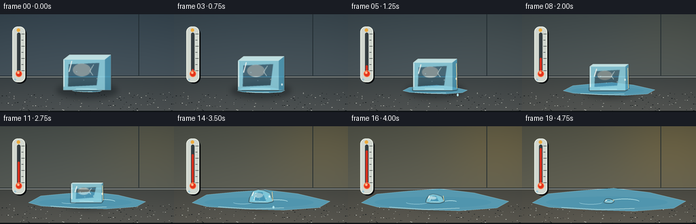
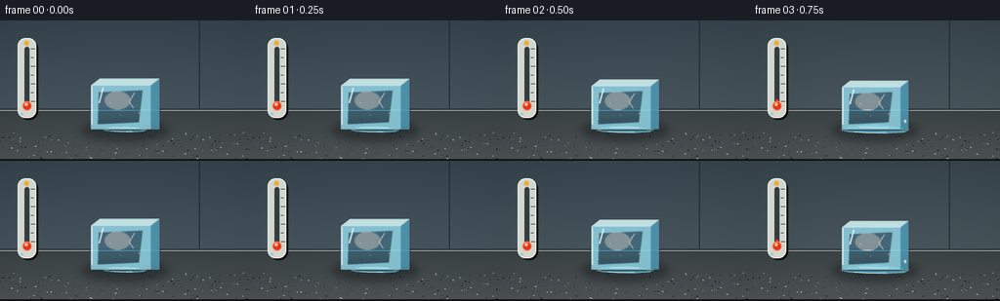

CODING AGENTS AS PIXEL WORLD MODELS
traex/GPT-5.6-Sol · phygen_096
点击播放 · 原生 RGB 像素
逐轮保存的候选
回放视频、检查图与代码变化。
每份候选均可单独播放。实际图片检查记录在下方工具轨迹中。
候选 01播放与检查图
点击播放 · 原生 RGB 像素


展开代码变化
--- 上一保存版本
+++ 本次保存版本
@@ -0,0 +1,186 @@
+from pathlib import Path
+import json, math
+import numpy as np
+from PIL import Image, ImageDraw, ImageFilter
+import artifact_io
+
+CASE_DIR = Path(__file__).resolve().parent
+SPEC = json.loads((CASE_DIR / 'task_spec.json').read_text())
+W, H, N = SPEC['width'], SPEC['height'], SPEC['frames']
+S = 4
+rng = np.random.default_rng(9601)
+
+def sc(v): return int(round(v*S))
+def pts(seq): return [(sc(x), sc(y)) for x,y in seq]
+def smooth(x): return x*x*(3-2*x)
+def ellipse(d, box, **kw): d.ellipse(tuple(sc(v) for v in box), **kw)
+def line(d, xy, **kw): d.line(pts(xy), **kw)
+def poly(d, xy, **kw): d.polygon(pts(xy), **kw)
+def rr(d, box, radius, **kw): d.rounded_rectangle(tuple(sc(v) for v in box), radius=sc(radius), **kw)
+
+# Fixed subtle surface flecks keep the world stationary across the timelapse.
+flecks = [(rng.uniform(0,W), rng.uniform(115,H), rng.uniform(.2,1.0), rng.integers(0,2)) for _ in range(150)]
+frames=[]
+for fi in range(N):
+ q = fi/(N-1)
+ m = smooth(q)
+ # Cool dawn shifts toward a much warmer environment.
+ yy, xx = np.mgrid[0:H*S, 0:W*S]
+ horizon = sc(91)
+ wall = yy < horizon
+ warm = m
+ base = np.zeros((H*S,W*S,3), dtype=np.float32)
+ # wall gradient and sun bloom from upper-right
+ vg = (yy/(H*S))
+ sun = np.exp(-(((xx-sc(229))/sc(92))**2 + ((yy-sc(28))/sc(76))**2))
+ base[:,:,0] = 53 + 26*vg + warm*(27+21*sun)
+ base[:,:,1] = 68 + 24*vg + warm*(13+12*sun)
+ base[:,:,2] = 78 + 22*vg - warm*(9+4*sun)
+ # stone counter
+ sy = np.clip((yy-horizon)/sc(53),0,1)
+ base[:,:,0] = np.where(wall, base[:,:,0], 57 + 23*sy + warm*16)
+ base[:,:,1] = np.where(wall, base[:,:,1], 65 + 20*sy + warm*8)
+ base[:,:,2] = np.where(wall, base[:,:,2], 68 + 18*sy - warm*2)
+ # vignette
+ vign = 1 - .15*((xx/(W*S)-.5)**2 + (yy/(H*S)-.47)**2)
+ base *= vign[:,:,None]
+ im = Image.fromarray(np.clip(base,0,255).astype('uint8'),'RGB').convert('RGBA')
+ d = ImageDraw.Draw(im, 'RGBA')
+ # wall panel seams and counter boundary
+ line(d, [(0,91),(256,91)], fill=(21,29,34,115), width=sc(1))
+ line(d, [(0,92),(256,92)], fill=(166,171,166,35), width=sc(1))
+ line(d, [(204,0),(204,90)], fill=(30,40,45,38), width=sc(1))
+ # stable fine counter texture
+ for x,y,r,c in flecks:
+ col=(190,192,183,18) if c else (18,23,25,20)
+ ellipse(d,(x-r,y-r*.35,x+r,y+r*.35), fill=col)
+
+ # Thermometer (background, left); mercury climbs strongly throughout.
+ # soft shadow
+ rr(d,(20,20,39,102),9,fill=(8,12,15,65))
+ rr(d,(18,18,37,100),8,fill=(209,215,207,225),outline=(240,244,233,155),width=sc(1))
+ rr(d,(25.1,27,30.1,87),2.5,fill=(52,61,64,230))
+ # ticks
+ for k in range(7):
+ y=29+k*9
+ length=4.4 if k%2==0 else 2.7
+ line(d,[(31.5,y),(31.5+length,y)],fill=(55,62,61,175),width=sc(.7))
+ mercury_top=84 - 52*m
+ rr(d,(26.1,mercury_top,29.1,89),1.5,fill=(217,48,29,255))
+ ellipse(d,(22.8,82.8,32.5,92.5),fill=(228,52,29,255),outline=(255,141,91,210),width=sc(1))
+ ellipse(d,(25.0,84.3,28.5,87.8),fill=(255,183,137,160))
+ # cold/warm pictograms
+ # snowflake at bottom-left of casing
+ line(d,[(20.2,96),(24.2,96)],fill=(135,190,215,190),width=sc(.7))
+ line(d,[(22.2,94),(22.2,98)],fill=(135,190,215,190),width=sc(.7))
+ # small sun at thermometer top
+ ellipse(d,(24.5,20.7,29.5,25.7),fill=(236,171,62,200))
+
+ # Contact shadow gets broader/fainter as ice diminishes, but puddle remains.
+ shadow_layer=Image.new('RGBA',im.size,(0,0,0,0)); sd=ImageDraw.Draw(shadow_layer,'RGBA')
+ shadow_w=45-12*m
+ ellipse(sd,(128-shadow_w,101,128+shadow_w,124),fill=(5,12,16,int(92-35*m)))
+ shadow_layer=shadow_layer.filter(ImageFilter.GaussianBlur(sc(4.0)))
+ im=Image.alpha_composite(im,shadow_layer); d=ImageDraw.Draw(im,'RGBA')
+
+ # Growing melt-water puddle; irregular, reflective, and fixed to counter plane.
+ pw=22+91*(m**.72); ph=3.5+18*(m**.76); cy=112.5
+ irregular=[(128-pw,cy),(128-pw*.79,cy-ph*.62),(128-pw*.35,cy-ph*.84),
+ (128+pw*.06,cy-ph),(128+pw*.53,cy-ph*.70),(128+pw,cy-ph*.10),
+ (128+pw*.84,cy+ph*.38),(128+pw*.33,cy+ph*.58),(128-pw*.22,cy+ph*.50),
+ (128-pw*.78,cy+ph*.31)]
+ poly(d,irregular,fill=(87,153,176,int(48+70*m)),outline=(172,226,235,int(90+90*m)))
+ # internal blue glassy band / reflected sky
+ ellipse(d,(128-pw*.82,cy-ph*.42,128+pw*.76,cy+ph*.36),fill=(80,149,174,int(15+30*m)))
+ # puddle front highlight follows spread
+ line(d,[(128-pw*.62,cy+ph*.32),(128-pw*.12,cy+ph*.48),(128+pw*.33,cy+ph*.39)],
+ fill=(210,244,241,int(80+65*m)),width=sc(.65))
+ # time-lapse ripple rings, alternating, spatially plausible after drips
+ if fi>=4:
+ phase=(fi%4)/4
+ rw=(9+phase*17)*(0.6+0.4*m); rh=rw*.19
+ # outline as arcs
+ d.arc(tuple(sc(v) for v in (151-rw,111-rh,151+rw,111+rh)),195,350,
+ fill=(204,244,245,100),width=sc(.65))
+ if fi>=9:
+ d.arc(tuple(sc(v) for v in (101-17*m,112-3*m,101+17*m,112+3*m)),8,170,
+ fill=(185,230,237,75),width=sc(.55))
+
+ # ICE: early cuboid transitions into a rounded slumped remnant.
+ # dimensions and bottom position; rapid loss later as warming intensifies
+ iw = 70*(1-m)**.63 + 14*m
+ ih = 52*(1-m)**.72 + 5*m
+ bottom=111.5 + 1.0*m
+ left=128-iw/2; right=128+iw/2; top=bottom-ih
+ roundness=2+11*m
+
+ ice=Image.new('RGBA',im.size,(0,0,0,0)); idr=ImageDraw.Draw(ice,'RGBA')
+ if m < .63:
+ # Cuboid with diminishing top perspective.
+ dx=9*(1-m/.8); dy=7*(1-m/.8)
+ front=[(left,top+dy),(right-dx,top+dy),(right-dx,bottom),(left,bottom)]
+ side=[(right-dx,top+dy),(right,top),(right,bottom-6*m),(right-dx,bottom)]
+ topface=[(left,top+dy),(left+dx,top),(right,top),(right-dx,top+dy)]
+ poly(idr,front,fill=(139,205,221,int(150+25*(1-m))),outline=(214,244,246,210))
+ poly(idr,side,fill=(77,157,187,145),outline=(184,228,237,180))
+ poly(idr,topface,fill=(205,239,240,175),outline=(237,253,249,220))
+ # Inner refracted cool core
+ poly(idr,[(left+8,top+dy+7),(right-dx-8,top+dy+5),(right-dx-12,bottom-7),(left+7,bottom-5)],
+ fill=(67,144,179,45))
+ # bright left edge
+ line(idr,[(left+1,top+dy+1),(left+1,bottom-5)],fill=(240,255,252,185),width=sc(1.3))
+ else:
+ # Rounded wet shard: irregular dome, not a rectangle.
+ r=iw/2
+ shape=[(128-r,bottom-1),(128-r*.94,bottom-ih*.36),(128-r*.67,top+ih*.12),
+ (128-r*.25,top),(128+r*.22,top+ih*.07),(128+r*.72,top+ih*.28),
+ (128+r,bottom-2),(128+r*.55,bottom),(128-r*.45,bottom)]
+ poly(idr,shape,fill=(125,200,219,170),outline=(221,251,248,210))
+ poly(idr,[(128-r*.67,bottom-ih*.33),(128-r*.24,top+ih*.16),(128+r*.12,top+ih*.18),
+ (128+r*.43,bottom-2),(128-r*.40,bottom-1)],fill=(67,151,184,58))
+ line(idr,[(128-r*.48,top+ih*.24),(128-r*.60,bottom-3)],fill=(242,255,252,170),width=sc(.9))
+ # Soft frosted patch, shrinks with cube.
+ if ih>11:
+ ellipse(idr,(left+iw*.20,top+ih*.25,left+iw*.58,top+ih*.61),fill=(231,250,248,int(27+30*(1-m))))
+ # trapped bubbles / cracks only while enough solid remains
+ if m<.84:
+ for bx,by,br in [(0.28,.48,1.3),(.60,.35,.8),(.71,.68,1.0),(.43,.72,.6)]:
+ x=left+iw*bx; y=top+ih*by
+ ellipse(idr,(x-br,y-br,x+br,y+br),fill=(229,251,250,85),outline=(54,132,164,70))
+ if m<.62:
+ line(idr,[(left+iw*.64,top+ih*.28),(left+iw*.56,top+ih*.46),(left+iw*.62,top+ih*.58)],
+ fill=(228,249,248,115),width=sc(.65))
+ # wet specular ribbons intensify
+ line(idr,[(left+iw*.18,top+ih*.18),(left+iw*.12,top+ih*.48)],fill=(255,255,249,190),width=sc(1.2))
+ line(idr,[(left+iw*.27,bottom-2),(left+iw*.70,bottom-1.3)],fill=(225,252,249,180),width=sc(.8))
+ # tiny moving droplets on surface at middle stages
+ if 3<=fi<=14 and ih>14:
+ frac=((fi*0.31)%1)
+ dx=right-(3+2*math.sin(fi))
+ dy=top+ih*(.35+.52*frac)
+ ellipse(idr,(dx-1.0,dy-1.6,dx+1.0,dy+1.6),fill=(224,252,250,190),outline=(255,255,255,150))
+ # modest glow blur under crisp layer gives transparent depth
+ glow=ice.filter(ImageFilter.GaussianBlur(sc(.8)))
+ im=Image.alpha_composite(im,glow)
+ im=Image.alpha_composite(im,ice)
+ d=ImageDraw.Draw(im,'RGBA')
+
+ # Detached drip captured in timelapse on selected frames.
+ if fi in (5,10,14):
+ dropx=right+1
+ dropy=bottom+3+(fi%3)*2
+ ellipse(d,(dropx-1.3,dropy-2,dropx+1.3,dropy+2),fill=(167,224,235,175),outline=(239,255,253,170))
+
+ # warm rim light from rising ambient temperature
+ if m>.12:
+ alpha=int(35+75*m)
+ line(d,[(right-1,top+ih*.15),(right,bottom-3)],fill=(255,217,145,alpha),width=sc(.8))
+
+ # foreground cinematic edge and tiny warm reflection
+ line(d,[(0,143),(256,143)],fill=(13,17,19,150),width=sc(2))
+ im=im.convert('RGB').resize((W,H),Image.Resampling.LANCZOS)
+ frames.append(np.asarray(im,dtype=np.uint8))
+
+frames=np.stack(frames)
+artifact_io.save(frames, CASE_DIR)
+print(f'saved {frames.shape} {frames.dtype} to {CASE_DIR}')
可观测工具轨迹
实际执行的命令与返回图片。
命令 1exit 0
/bin/bash -lc "cat prompt.txt && printf '\\n--- GENERATION_RULES.md ---\\n' && cat GENERATION_RULES.md && printf '\\n--- task_spec.json ---\\n' && cat task_spec.json"
命令 2exit 0
/bin/bash -lc "find . -maxdepth 2 -type f -printf '%p\\n' | sort && printf '\\nTOOLS\\n' && command -v ffmpeg || true && command -v blender || true && command -v python3 || true"
命令 3exit 0
/bin/bash -lc 'cat artifact_io.py'
命令 4exit 0
/bin/bash -lc "cat > generate.py <<'PY'
from pathlib import Path
import json, math
import numpy as np
from PIL import Image, ImageDraw, ImageFilter
import artifact_io
CASE_DIR = Path(__file__).resolve().parent
SPEC = json.loads((CASE_DIR / 'task_spec.json').read_text())
W, H, N = SPEC['width'], SPEC['height'], SPEC['frames']
S = 4
rng = np.random.default_rng(9601)
def sc(v): return int(round(v*S))
def pts(seq): return [(sc(x), sc(y)) for x,y in seq]
def smooth(x): return x*x*(3-2*x)
def ellipse(d, box, **kw): d.ellipse(tuple(sc(v) for v in box), **kw)
def line(d, xy, **kw): d.line(pts(xy), **kw)
def poly(d, xy, **kw): d.polygon(pts(xy), **kw)
def rr(d, box, radius, **kw): d.rounded_rectangle(tuple(sc(v) for v in box), radius=sc(radius), **kw)
# Fixed subtle surface flecks keep the world stationary across the timelapse.
flecks = [(rng.uniform(0,W), rng.uniform(115,H), rng.uniform(.2,1.0), rng.integers(0,2)) for _ in range(150)]
frames=[]
for fi in range(N):
q = fi/(N-1)
m = smooth(q)
# Cool dawn shifts toward a much warmer environment.
yy, xx = np.mgrid[0:H*S, 0:W*S]
horizon = sc(91)
wall = yy < horizon
warm = m
base = np.zeros((H*S,W*S,3), dtype=np.float32)
# wall gradient and sun bloom from upper-right
vg = (yy/(H*S))
sun = np.exp(-(((xx-sc(229))/sc(92))**2 + ((yy-sc(28))/sc(76))**2))
base[:,:,0] = 53 + 26*vg + warm*(27+21*sun)
base[:,:,1] = 68 + 24*vg + warm*(13+12*sun)
base[:,:,2] = 78 + 22*vg - warm*(9+4*sun)
# stone counter
sy = np.clip((yy-horizon)/sc(53),0,1)
base[:,:,0] = np.where(wall, base[:,:,0], 57 + 23*sy + warm*16)
base[:,:,1] = np.where(wall, base[:,:,1], 65 + 20*sy + warm*8)
base[:,:,2] = np.where(wall, base[:,:,2], 68 + 18*sy - warm*2)
# vignette
vign = 1 - .15*((xx/(W*S)-.5)**2 + (yy/(H*S)-.47)**2)
base *= vign[:,:,None]
im = Image.fromarray(np.clip(base,0,255).astype('uint8'),'RGB').convert('RGBA')
d = ImageDraw.Draw(im, 'RGBA')
# wall panel seams and counter boundary
line(d, [(0,91),(256,91)], fill=(21,29,34,115), width=sc(1))
line(d, [(0,92),(256,92)], fill=(166,171,166,35), width=sc(1))
line(d, [(204,0),(204,90)], fill=(30,40,45,38), width=sc(1))
# stable fine counter texture
for x,y,r,c in flecks:
col=(190,192,183,18) if c else (18,23,25,20)
ellipse(d,(x-r,y-r*.35,x+r,y+r*.35), fill=col)
# Thermometer (background, left); mercury climbs strongly throughout.
# soft shadow
rr(d,(20,20,39,102),9,fill=(8,12,15,65))
rr(d,(18,18,37,100),8,fill=(209,215,207,225),outline=(240,244,233,155),width=sc(1))
rr(d,(25.1,27,30.1,87),2.5,fill=(52,61,64,230))
# ticks
for k in range(7):
y=29+k*9
length=4.4 if k%2==0 else 2.7
line(d,[(31.5,y),(31.5+length,y)],fill=(55,62,61,175),width=sc(.7))
mercury_top=84 - 52*m
rr(d,(26.1,mercury_top,29.1,89),1.5,fill=(217,48,29,255))
ellipse(d,(22.8,82.8,32.5,92.5),fill=(228,52,29,255),outline=(255,141,91,210),width=sc(1))
ellipse(d,(25.0,84.3,28.5,87.8),fill=(255,183,137,160))
# cold/warm pictograms
# snowflake at bottom-left of casing
line(d,[(20.2,96),(24.2,96)],fill=(135,190,215,190),width=sc(.7))
line(d,[(22.2,94),(22.2,98)],fill=(135,190,215,190),width=sc(.7))
# small sun at thermometer top
ellipse(d,(24.5,20.7,29.5,25.7),fill=(236,171,62,200))
# Contact shadow gets broader/fainter as ice diminishes, but puddle remains.
shadow_layer=Image.new('RGBA',im.size,(0,0,0,0)); sd=ImageDraw.Draw(shadow_layer,'RGBA')
shadow_w=45-12*m
ellipse(sd,(128-shadow_w,101,128+shadow_w,124),fill=(5,12,16,int(92-35*m)))
shadow_layer=shadow_layer.filter(ImageFilter.GaussianBlur(sc(4.0)))
im=Image.alpha_composite(im,shadow_layer); d=ImageDraw.Draw(im,'RGBA')
# Growing melt-water puddle; irregular, reflective, and fixed to counter plane.
pw=22+91*(m**.72); ph=3.5+18*(m**.76); cy=112.5
irregular=[(128-pw,cy),(128-pw*.79,cy-ph*.62),(128-pw*.35,cy-ph*.84),
(128+pw*.06,cy-ph),(128+pw*.53,cy-ph*.70),(128+pw,cy-ph*.10),
(128+pw*.84,cy+ph*.38),(128+pw*.33,cy+ph*.58),(128-pw*.22,cy+ph*.50),
(128-pw*.78,cy+ph*.31)]
poly(d,irregular,fill=(87,153,176,int(48+70*m)),outline=(172,226,235,int(90+90*m)))
# internal blue glassy band / reflected sky
ellipse(d,(128-pw*.82,cy-ph*.42,128+pw*.76,cy+ph*.36),fill=(80,149,174,int(15+30*m)))
# puddle front highlight follows spread
line(d,[(128-pw*.62,cy+ph*.32),(128-pw*.12,cy+ph*.48),(128+pw*.33,cy+ph*.39)],
fill=(210,244,241,int(80+65*m)),width=sc(.65))
# time-lapse ripple rings, alternating, spatially plausible after drips
if fi>=4:
phase=(fi%4)/4
rw=(9+phase*17)*(0.6+0.4*m); rh=rw*.19
# outline as arcs
d.arc(tuple(sc(v) for v in (151-rw,111-rh,151+rw,111+rh)),195,350,
fill=(204,244,245,100),width=sc(.65))
if fi>=9:
d.arc(tuple(sc(v) for v in (101-17*m,112-3*m,101+17*m,112+3*m)),8,170,
fill=(185,230,237,75),width=sc(.55))
# ICE: early cuboid transitions into a rounded slumped remnant.
# dimensions and bottom position; rapid loss later as warming intensifies
iw = 70*(1-m)**.63 + 14*m
ih = 52*(1-m)**.72 + 5*m
bottom=111.5 + 1.0*m
left=128-iw/2; right=128+iw/2; top=bottom-ih
roundness=2+11*m
ice=Image.new('RGBA',im.size,(0,0,0,0)); idr=ImageDraw.Draw(ice,'RGBA')
if m < .63:
# Cuboid with diminishing top perspective.
dx=9*(1-m/.8); dy=7*(1-m/.8)
front=[(left,top+dy),(right-dx,top+dy),(right-dx,bottom),(left,bottom)]
side=[(right-dx,top+dy),(right,top),(right,bottom-6*m),(right-dx,bottom)]
topface=[(left,top+dy),(left+dx,top),(right,top),(right-dx,top+dy)]
poly(idr,front,fill=(139,205,221,int(150+25*(1-m))),outline=(214,244,246,210))
poly(idr,side,fill=(77,157,187,145),outline=(184,228,237,180))
poly(idr,topface,fill=(205,239,240,175),outline=(237,253,249,220))
# Inner refracted cool core
poly(idr,[(left+8,top+dy+7),(right-dx-8,top+dy+5),(right-dx-12,bottom-7),(left+7,bottom-5)],
fill=(67,144,179,45))
# bright left edge
line(idr,[(left+1,top+dy+1),(left+1,bottom-5)],fill=(240,255,252,185),width=sc(1.3))
else:
# Rounded wet shard: irregular dome, not a rectangle.
r=iw/2
shape=[(128-r,bottom-1),(128-r*.94,bottom-ih*.36),(128-r*.67,top+ih*.12),
(128-r*.25,top),(128+r*.22,top+ih*.07),(128+r*.72,top+ih*.28),
(128+r,bottom-2),(128+r*.55,bottom),(128-r*.45,bottom)]
poly(idr,shape,fill=(125,200,219,170),outline=(221,251,248,210))
poly(idr,[(128-r*.67,bottom-ih*.33),(128-r*.24,top+ih*.16),(128+r*.12,top+ih*.18),
(128+r*.43,bottom-2),(128-r*.40,bottom-1)],fill=(67,151,184,58))
line(idr,[(128-r*.48,top+ih*.24),(128-r*.60,bottom-3)],fill=(242,255,252,170),width=sc(.9))
# Soft frosted patch, shrinks with cube.
if ih>11:
ellipse(idr,(left+iw*.20,top+ih*.25,left+iw*.58,top+ih*.61),fill=(231,250,248,int(27+30*(1-m))))
# trapped bubbles / cracks only while enough solid remains
if m<.84:
for bx,by,br in [(0.28,.48,1.3),(.60,.35,.8),(.71,.68,1.0),(.43,.72,.6)]:
x=left+iw*bx; y=top+ih*by
ellipse(idr,(x-br,y-br,x+br,y+br),fill=(229,251,250,85),outline=(54,132,164,70))
if m<.62:
line(idr,[(left+iw*.64,top+ih*.28),(left+iw*.56,top+ih*.46),(left+iw*.62,top+ih*.58)],
fill=(228,249,248,115),width=sc(.65))
# wet specular ribbons intensify
line(idr,[(left+iw*.18,top+ih*.18),(left+iw*.12,top+ih*.48)],fill=(255,255,249,190),width=sc(1.2))
line(idr,[(left+iw*.27,bottom-2),(left+iw*.70,bottom-1.3)],fill=(225,252,249,180),width=sc(.8))
# tiny moving droplets on surface at middle stages
if 3<=fi<=14 and ih>14:
frac=((fi*0.31)%1)
dx=right-(3+2*math.sin(fi))
dy=top+ih*(.35+.52*frac)
ellipse(idr,(dx-1.0,dy-1.6,dx+1.0,dy+1.6),fill=(224,252,250,190),outline=(255,255,255,150))
# modest glow blur under crisp layer gives transparent depth
glow=ice.filter(ImageFilter.GaussianBlur(sc(.8)))
im=Image.alpha_composite(im,glow)
im=Image.alpha_composite(im,ice)
d=ImageDraw.Draw(im,'RGBA')
# Detached drip captured in timelapse on selected frames.
if fi in (5,10,14):
dropx=right+1
dropy=bottom+3+(fi%3)*2
ellipse(d,(dropx-1.3,dropy-2,dropx+1.3,dropy+2),fill=(167,224,235,175),outline=(239,255,253,170))
# warm rim light from rising ambient temperature
if m>.12:
alpha=int(35+75*m)
line(d,[(right-1,top+ih*.15),(right,bottom-3)],fill=(255,217,145,alpha),width=sc(.8))
# foreground cinematic edge and tiny warm reflection
line(d,[(0,143),(256,143)],fill=(13,17,19,150),width=sc(2))
im=im.convert('RGB').resize((W,H),Image.Resampling.LANCZOS)
frames.append(np.asarray(im,dtype=np.uint8))
frames=np.stack(frames)
artifact_io.save(frames, CASE_DIR)
print(f'saved {frames.shape} {frames.dtype} to {CASE_DIR}')
PY
python3 generate.py
python3 - <<'PY'
from PIL import Image
import numpy as np
x=np.load('pixels.npz')['pixels']
print('pixels',x.shape,x.dtype,'frames differ',[(i,int(np.count_nonzero(x[:,:,i]"'!=x[:,:,i-1]))) for i in range(1,20)])
print('"'artifacts', Image.open('inspection.png').size, Image.open('frames/00.png').size)
PY"保存候选 1 份；完成命令 4 次；可验证图片返回 0 张。原始 API 响应与完整日志保留在本地。